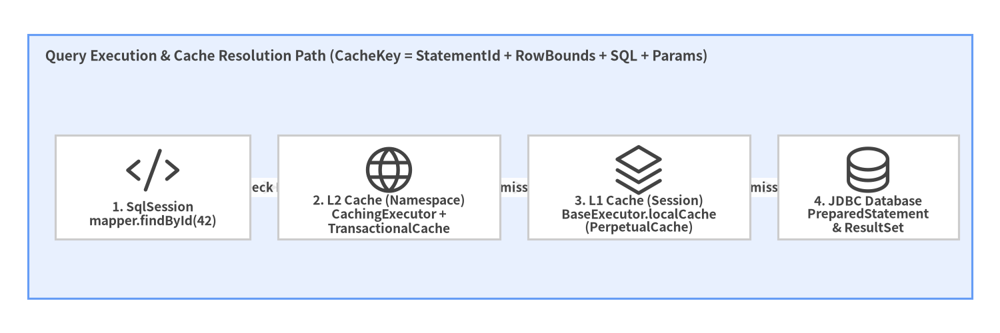
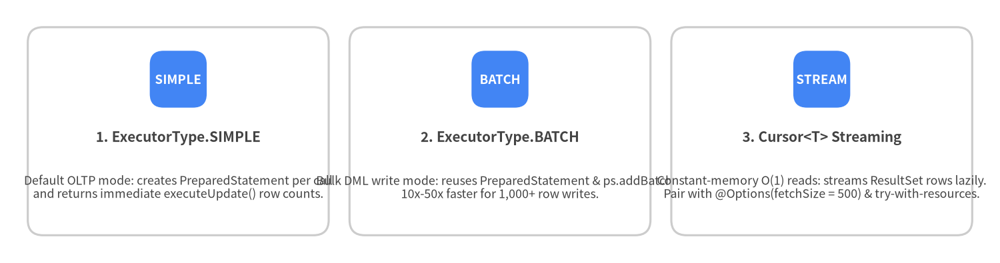

7. L1/L2 Caching, Transactions & Batching
MyBatis features a two-tier cache architecture (L1 Local Session Cache and L2 Namespace Transactional Cache) alongside three specialized JDBC execution engines (SimpleExecutor, ReuseExecutor, and BatchExecutor) and streaming Cursor<T> queries.
Two-Tier Cache Architecture (L1 vs L2)
When cacheEnabled="true", every query passes through CachingExecutor (L2) before reaching BaseExecutor (L1) and JDBC:

Source Code
from drawlib.canvas import save, setup
from drawlib.diagrams.architecture import ArchitectureDiagram, Node, NodeGroup, PhosphorIcon
from drawlib.styles import Colors, Styles
setup(width=144, height=48, dpi=150)
d = ArchitectureDiagram(
node_style=Styles.Dark,
node_text_style=Styles.DarkBold.patch(text_size=9.2),
edge_style=Styles.Dark.patch(line_width=1.5),
edge_text_style=Styles.DarkBold.patch(text_size=8.8),
node_card_style=Styles.Neutral.patch(shape_fill_color=Colors.White),
)
grp = d.add(
NodeGroup(
"Query Execution & Cache Resolution Path (CacheKey = StatementId + RowBounds + SQL + Params)",
width=136,
height=38,
style=Styles.PrimaryNeutral,
text_style=Styles.DarkBold.patch(text_size=10.0, halign="left", valign="top"),
),
xy=(4, 5),
)
n_app = grp.add(Node("1. SqlSession\nmapper.findById(42)", icon=PhosphorIcon.CODE, width=28, height=15), xy=(18, 16))
n_l2 = grp.add(Node("2. L2 Cache (Namespace)\nCachingExecutor +\nTransactionalCache", icon=PhosphorIcon.GLOBE, width=32, height=15), xy=(52, 16))
n_l1 = grp.add(Node("3. L1 Cache (Session)\nBaseExecutor.localCache\n(PerpetualCache)", icon=PhosphorIcon.STACK, width=32, height=15), xy=(88, 16))
n_db = grp.add(Node("4. JDBC Database\nPreparedStatement\n& ResultSet", icon=PhosphorIcon.DATABASE, width=26, height=15), xy=(121, 16))
n_app.connect(n_l2, label="check L2")
n_l2.connect(n_l1, label="miss")
n_l1.connect(n_db, label="miss")
d.draw(xy=(0, 0))
save()
L1 Local Cache (localCacheScope)
The L1 cache (BaseExecutor.localCache) is always enabled and cannot be turned off completely, because MyBatis uses it internally to resolve circular references during nested <resultMap> queries. However, you control its lifetime via localCacheScope:
localCacheScope |
Behavior | Multi-Instance / Microservice Recommendation |
|---|---|---|
SESSION (Default) |
Caches query results in memory for the entire lifetime of the SqlSession (until commit(), rollback(), an INSERT/UPDATE/DELETE, or close()). Returns the exact same Java object reference on repeated calls, so mutating a returned POJO mutates the cached entry! |
Avoid in clustered deployments unless sessions are strictly single-query. |
STATEMENT (Recommended) |
Uses the L1 cache only while executing a single MappedStatement (to resolve nested subqueries) and clears it immediately when the statement finishes. |
Recommended (<setting name="localCacheScope" value="STATEMENT"/>) |
L2 Namespace Cache & JEP-290 Deserialization Security
The L2 cache is opt-in per Mapper namespace via <cache/> in XML or @CacheNamespace in Java.
<cache
eviction="LRU"
flushInterval="60000"
size="1024"
readOnly="false"
blocking="true"/>
- Transactional Staging (
TransactionalCache): Entries written during aSqlSessionare staged in a session-local buffer and are only published to the shared L2 namespace cache whensession.commit()succeeds. This guarantees uncommitted reads never pollute the L2 cache. - Namespace-Level Invalidation Warning: Any
INSERT,UPDATE, orDELETEin a Mapper namespace clears that namespace's entire L2 cache. Avoid joining tables from other namespaces inside a cached Mapper unless synchronized via<cache-ref namespace="..."/>. - JEP-290
jdk.serialFilterSecurity (SerialFilterChecker): WhenreadOnly="false"(the default),SerializedCacheusesObjectInputStreamto clone cached objects. MyBatis 3.6.0'sSerialFilterCheckerlogs a warning if no JVM deserialization filter is configured. Always pass-Djdk.serialFilter=com.example.blog.domain.**;java.util.**;java.lang.**;java.time.**;!*when using L2SerializedCacheor distributed cache adapters.
High-Throughput Batch Execution (ExecutorType.BATCH) & Streaming (Cursor<T>)
When inserting or updating thousands of rows, or when streaming millions of rows without exhausting JVM heap, switch execution modes at the SqlSession level:

Source Code
from drawlib.canvas import save, setup
from drawlib.smartarts import CardList
from drawlib.styles import Colors, Styles
setup(width=144, height=38, dpi=150)
cards = CardList(
style=Styles.Neutral.patch(shape_fill_color=Colors.White),
text_style=Styles.DarkBold.patch(text_size=10.0),
description_style=Styles.Dark.patch(text_size=8.6),
badge_shape="rounded_rect",
badge_style=Styles.PrimaryFlat,
badge_text_style=Styles.WhiteBold.patch(text_size=9.0),
direction="horizontal",
spacing=3.0,
)
cards.add(
"1. ExecutorType.SIMPLE",
"Default OLTP mode: creates PreparedStatement per call\nand returns immediate executeUpdate() row counts.",
badge_text="SIMPLE",
)
cards.add(
"2. ExecutorType.BATCH",
"Bulk DML write mode: reuses PreparedStatement & ps.addBatch().\n10x-50x faster for 1,000+ row writes.",
badge_text="BATCH",
)
cards.add(
"3. Cursor<T> Streaming",
"Constant-memory O(1) reads: streams ResultSet rows lazily.\nPair with @Options(fetchSize = 500) & try-with-resources.",
badge_text="STREAM",
)
cards.draw((4.0, 4.0), width=136.0, height=30.0, align="bottom_left")
save()
Bulk Writes with ExecutorType.BATCH
// Open a dedicated BATCH session for high-throughput bulk writes
try (SqlSession batchSession = sqlSessionFactory.openSession(ExecutorType.BATCH)) {
AuthorMapper mapper = batchSession.getMapper(AuthorMapper.class);
for (int i = 0; i < 10_000; i++) {
mapper.insert(authors.get(i));
// Flush every 1,000 statements to bound JDBC driver memory
if ((i + 1) % 1_000 == 0) {
batchSession.flushStatements();
}
}
batchSession.commit(); // Flushes remaining statements and commits transaction
}
Streaming Millions of Rows with Cursor<T>
Returning Cursor<T> instead of List<T> streams rows one by one from the open JDBC ResultSet:
public interface PostMapper {
@Select("SELECT id, author_id, title, published_at FROM posts ORDER BY id ASC")
@Options(fetchSize = 500)
Cursor<Post> streamAllPosts();
}
// Both SqlSession AND Cursor<Post> must be enclosed in try-with-resources!
try (SqlSession session = sqlSessionFactory.openSession();
Cursor<Post> cursor = session.getMapper(PostMapper.class).streamAllPosts()) {
for (Post post : cursor) {
exportRowToCsv(post);
}
}